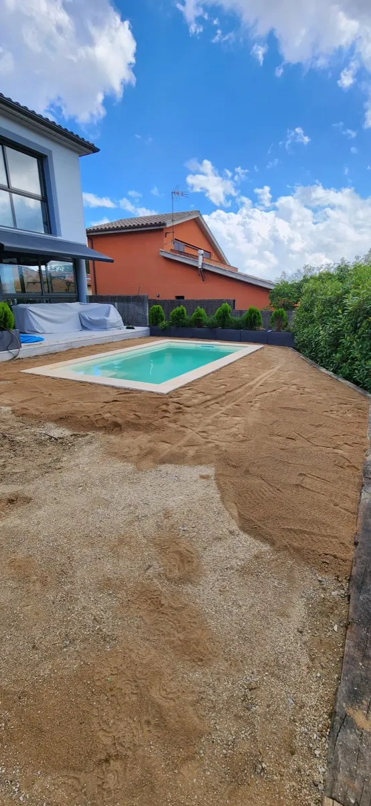
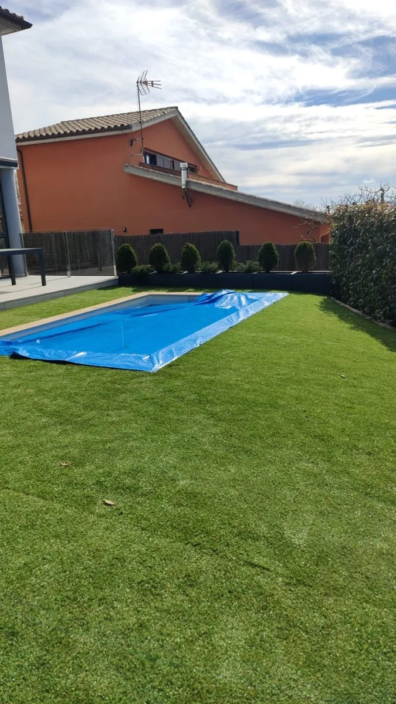
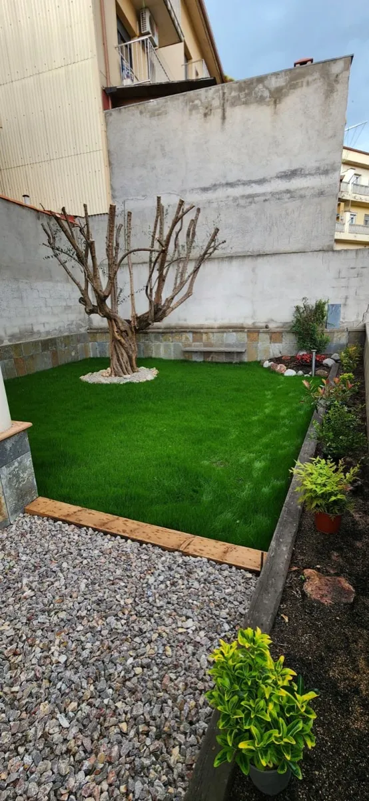

El teu jardí, cuidat amb passió
Serveis professionals de jardineria a Osona i comarques properes de la Catalunya Central. Més de 15 anys d'experiència transformant espais verds.
Puntualitat
Complim amb els terminis acordats
Qualitat
Feina ben feta, sempre
Tracte proper
Atenció personalitzada
Confiança
Més de 15 anys d'experiència
Els nostres serveis
Solucions completes per al teu jardí, des del disseny fins al manteniment
Poda en alçada i tala d'arbres
Poda professional amb cordes i tècniques d'arboricultura. Tala controlada d'arbres de gran port, zones de difícil accés i treballs en alçada amb total seguretat.
Saber-ne més →Disseny de jardins
Creem espais verds únics adaptats a les teves necessitats i estil de vida. Des de la planificació fins a l'execució.
Manteniment integral
Cura periòdica del teu jardí: sega, desbrossament, neteja, abonat i tot el que necessiti per estar sempre perfecte.
Instal·lació de gespa
Gespa natural o artificial de qualitat. Preparem el terreny i instal·lem perquè tinguis un verd perfecte tot l'any.
Sistemes de reg
Disseny i instal·lació de sistemes de reg automàtic. Estalvia aigua i temps amb una instal·lació eficient.
Neteja i desbrossament
Neteja de finques, solars i jardins abandonats. Retirada de restes vegetals i deixalles amb maquinària professional.
Zones on treballem
Servim amb dedicació a les comarques de la Catalunya Central i l'Alt Maresme
Osona
Vic, Manlleu, Torelló, Centelles, Tona, Roda de Ter, Sant Hipòlit de Voltregà i rodalies.
Gironès, La Selva i La Garrotxa
Girona, Santa Coloma de Farners, Anglès, Olot, Besalú i municipis propers.
Vallès Oriental
Granollers, La Garriga, Sant Celoni, Cardedeu, Caldes de Montbui i rodalies.
Comarques properes
Consulta'ns per a treballs a altres ubicacions. Ens desplacem sense problema.
Els nostres treballs
Alguns exemples de feines realitzades

Abans i Després
Descobreix les transformacions que fem en els nostres projectes


Abans DesprésCol·locació de Gespa Artificial
Instal·lació de gespa artificial de qualitat per obtenir un jardí verd i impecable durant tot l'any, sense manteniment.


Abans DesprésDisseny Integral de Jardí
Projecte complet de disseny amb poda d'arbres, col·locació de gespa i grava per crear un espai funcional i estètic.
El teu jardiner de confiança
Sóc un jardiner autònom amb més de 15 anys d'experiència al sector. Després de molt temps treballant per a d'altres, ara fa un any vaig decidir fer realitat un somni: treballar pel meu compte i oferir un servei proper, de qualitat i fet amb passió.
M'encarrego de tot el que tingui a veure amb el teu jardí: manteniment, disseny, neteges, podes, sistemes de reg, plantació i molt més. Tant si tens un petit espai verd com si vols transformar un jardí sencer, puc ajudar-te a fer-lo créixer i brillar.
Treballo amb cura, respecte pel medi ambient i, sobretot, amb ganes de deixar els espais millor del que els he trobat.
Fem créixer junts el teu jardí
Demana pressupost sense compromís i descobreix com podem transformar el teu espai verd
Contacta'mParlem del teu projecte
Tens un projecte en ment? Vols un pressupost? O simplement tens dubtes? No dubtis a contactar-me, estaré encantat d'ajudar-te.
Missatge enviat!
Gràcies per contactar. Et respondré el més aviat possible.